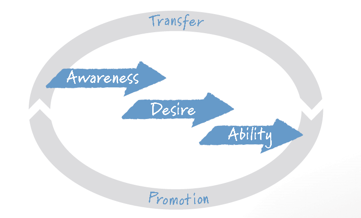
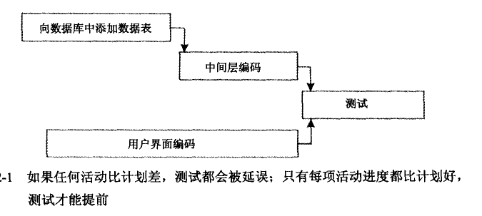
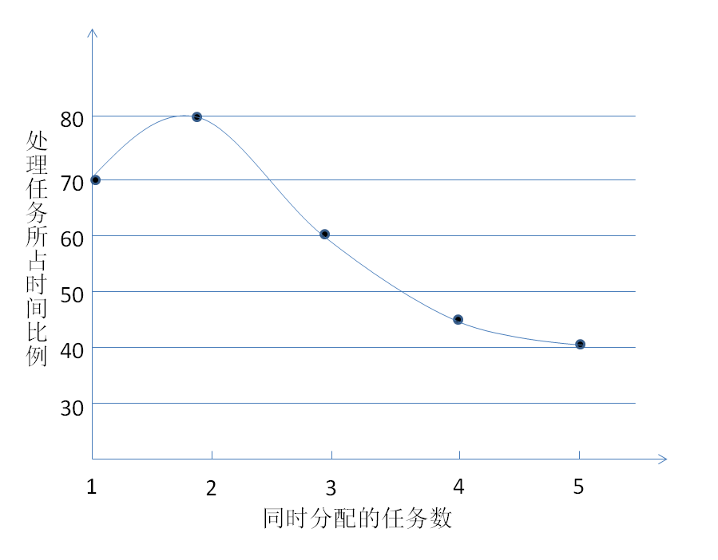

Agile
Table of Contents
Agile
what we can do to make our agile more agile
- Let's sit together to learn agile
- Review- what's the problem in our team
- Is there priority in them
- summarize into catelog?
- Let's try to make change
*in fact, ususally, we can't know what is right, what is the purpose for each process, if we know this, thing will be clear, and this will guide us in daily work.* Added:
Succeeding with agile – Software Development use Scrum
Why becoming agile is hard
Changing practices is one thing; changing minds is quite another
Why transitioning is hard
One failer example: Restrict the scope to development orgnization. build an agile office
- Successful change is not entirely top-down or bottom-up.
单纯的自上而下，或者自下而上，都无法成功实现改变
- The end state is unpredictable.
成功的模式不可复制，每个企业，都必须基于自己的情况，作出自己的改变方案。 这个转变，看不到最终状态。所以瞄准然后达到的模式是不成立的。因为这个转 变，是个持续改进的过程。在持续改进的过程中，需要一点一点的试探，再试探， 组织在不断的试探中，不断产生变化，一点一点填补那些small gap，between current state and and the intermediate state.
- Scrum is pervasive.
Scrum不是孤立的一个变化，这种变化广泛蔓延在组织内部。它不像一个process 的引入，比如review code，这种变化是一种孤立的事件，只发生在代码完成后 的一段时间。而scrum广泛渗透在开发的整个过程。开发者甚至要去了解新的开 发模式，TDD？为了pair programing，不得不摘掉耳机，离开和电脑之间的二元 世界，转为多元的工作状态。不仅如此，scrum影响到组织的各个部门。经济预 算要为scrum重新做开销评估；市场部门要重新开始考量发布计划，要更频繁的 与研发进行沟通.
- Scrum is dramatically different.
改变不仅遍及开发的整个过程，而且很多改变是颠覆性的。对于开发者来说，完 美的设计不再是必须的，有的时候甚至是多余和错误的。TDD式的开发在agile中 扮演重要的角色，但是这对传统的开发者来说需要很长的适应过程。
- Change is coming more quickly than ever before.
- Best practices are dangerous.
Scrum的核心是持续改进。如果我们在转变过程中，去收集那些我们认为是最好 的方法，这样就会失去持续改进的动力。持续改进，不断调整，才能让我们越来 越好。
Why the transition is worthwhile
- Higher productivity and lower costs
- Improved employee engagement and job satisfaction
一个是加班变少了，planing会尽可能的按照实际工作量做commitment，所以就 不需要OT。还有就是team内合作和交互变多了。做出的产品能更快的看到成果， 被客户使用，并得到反馈。
- Faster time to market
- Higher quality
因为工程师都以一个合适的工作负荷在工作，不会因为赶进度而损害质量。另外， 因为一些新的工程方法的引入，比如pairprograming，refactory，以及对提早 测试的腔调，例如TDD。
- Improved stakeholder satisfaction
- What we’ve been doing no longer works
ADAPTing to scrum

Awareness
- Communicate that, there is a problem
- Use metrics
- Encourage people to attend conference or training.
Let people know, what is happening outside. Let them know the competitor's product. Let them know, what is real needs from customer by making them discussing. Hire people in different background.
- Run a pilot project
- Focus on the most important reasons to change
There is many reasons, choose the most important and critical one, and use this reason to convince people and make them aware the Scrum.
Desire
- Tools
- Communicate, there is a better way
In aware phase, we emphasis the most critical problem, that lead us aware the Scrum, then know, let's communicate for how Scrum can address these problems.
- Create a sense of urgency
- Build momentum
这一点很有意思，腔调的是忽略那些反对者，关注那些支持者，让那些支持者更 加狂热。避免去讨论哪些要做哪些不要做，找那些要做的团队去做，然后做出成 功的例子，这样的目的，是为了在组织内部造成势不可挡的趋势，来推动整个转 变的进行。
- Get the team to take Scrum for a test driven.
与其和team去抽象的讨论Scrum，不如先切实的尝试一些方法，比如test driven。 以一个周期，比如3-6个月，开始一段尝试，完成后做retrospective。尝试的结 论，不一定是决定要不要采用Scrum，可以是简单的，是继续这种方法，还是决 定这种方法不适合team而放弃。
- Align incentives
激励是一个问题，从激励个人的角度转变为激励team，所有的衡量指标变为team。 对team的贡献，team对你的feedback。
- Communicate, there is a better way
New roles
The PO
- Responsiblity
- Providing vision
- Providing boundaries
- I need it by June.
- We need to reduce the per-unit cost by half.
- It needs to run at twice the speed.
- It can use only half the memory of the current version.
- Providing vision
Product backlog
DEEP
- Detailed Appropriately.
User stories on the product backlog that will be done soon need to be sufficiently well understood that they can be completed in the coming sprint. Stories that will not be developed for awhile should be described with less detail.
- estimated.
The product backlog is more than a list of all work to be done; it is also a useful planning tool. Because items further down the backlog are not as well understood (yet), the estimates associated with them will be less precise than estimates given items at the top.
- emergent.
A product backlog is not static. It will change over time. As more is learned, user stories on the product backlog will be added, removed, or reprioritized.
- Prioritized.
The product backlog should be sorted with the most valuable items at the top and the least valuable at the bottom. By always working in priority order, the team is able to maximize the value of the product or system being developed.
Shift from documents to discussions
Written words are misleading One example, about Booked
User story
As a <type of user>, I want <some goal> so that <some reason>.
Agile Estimating and Planing – Mike Cohn
规划的目的
规划的目的寻找一个答案，用于回答“要构建什么”这一产品开发的总体问题。答 案综合了功能，资源，进度。 规划和计划的区别在于，计划是图表或者报告，是结果，而规划强调的是产生这 个结果的过程。通过对过程的控制，提高结果的准确性。更好的达到以下提到的 几个方面的目的。 敏捷承认，规划不可能在一个项目的开始就对它进行完整的定义。敏捷规划是均 衡分布在整个项目开发的过程中。以发布规划为基础，然后是一组迭代的规划。 所以敏捷规划：
- 更关注规划而不是计划（过程而不是结果）
- 鼓励修改
- 产生易于修改的计划
- 延续到真个项目过程
减少风险
在规划的时候，把可能的风险考虑在内，这样就可以降低项目实施不能按照计划 的风险。
降低不确定性
在开发过程中，开发小组不断的喜欢产品的图像，减少开发出的产品不是需求所 要的风险。
提供更好的决策支持
在客户与开发之间建立信任
传递信息
传递对项目的期待。
规划失败的原因
传统的项目规划会存在一些问题：
- 大约2/3的项目会显著超出预算。
- 产品64%的功能很少或者从不会被使用。
- 一般项目花费的时间会超出进度表100%。
基于项目进行中的活动而不是实现的功能进行规划
- 客户并不能从活动中获得价值。功能才是客户价值的计量单位
- 传统的进度表被建立和审阅之后，检查这个进度表时，我们实际上是在寻找被遗忘的活动而非功能。
- 基于活动的计划常常导致项目的实际开发时间超出进度表。
当面临这个问题时，开发小组容易寻求不恰当的降低质量手段来节省时间。- 活动不会提前完成
帕金森定律 工作总要是拖到最后一刻才完成 如果墙上有一张甘特图，预期一项活动要5天，分配给该活动的程序员通常会保 证让这项目用完这5天，如果看起来可以提前完成，他可能会增加一些花哨的功 能来达到这一目的(gold-plating),他也可能部分时间花在研究一些他觉得可能 会有用的新技术上。在一些公司，如果一项工作被提前完成了，老板可能会责怪 他估计不准确，或者觉得其他的功能也能提前完成。所以他干嘛要去冒这个险呢。
- 延误沿着进度表向下传递

- 活动不是独立的
当一项活动的时间范围不影响另一项活动的时间范围时，我们称这两个活动是独 立的。 软件开发中很多活动不是独立的。 例如在开发一个程序的UI，第一个界面话费了比预期多50%的时间，很可能后面 的开发都会比计划的时间要多。
- 活动不会提前完成
- 多任务处理导致更多延迟

- 不按优先级开发功能
很多传统的计划实际上是假设所有的工作都会完成。这意味着一般是基于开发小 组的方便来确定开发的优先级。
- 忽略了不确定性
传统规划方法忽略了不确定性的存在。假设最初的需求分析就可以产生对产品完 整的完善的定义。假设用户在这个开发周期都不会改变想法。他们的观点不会更 细化，不会提出新的需求。 消除这种不确定性的方法就是迭代。
- 把估计当承诺
敏捷方法
敏捷宣言
- 个人与交互重于开发过程与工具。
- 可用的软件重于复杂的文档。
- 寻求客户的合作重于对合同的谈判。
- 对变化的相应重于始终遵循固定的计划。